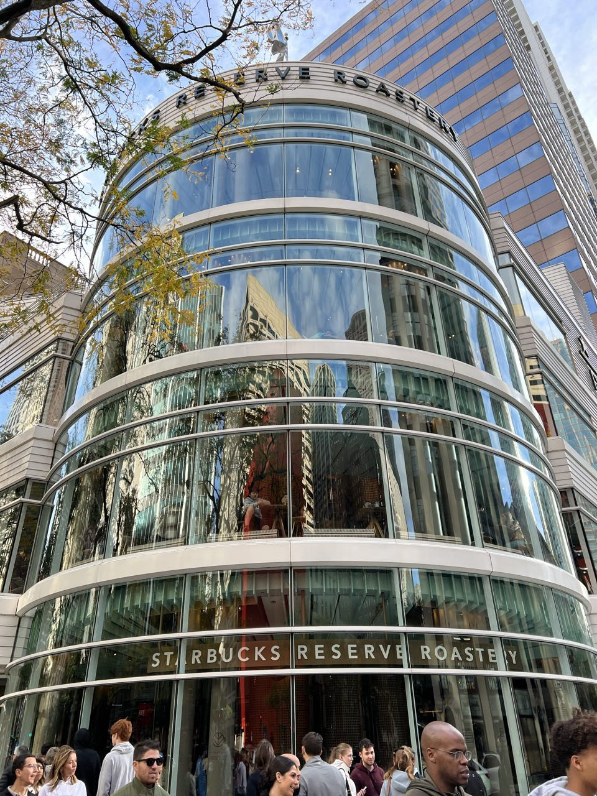
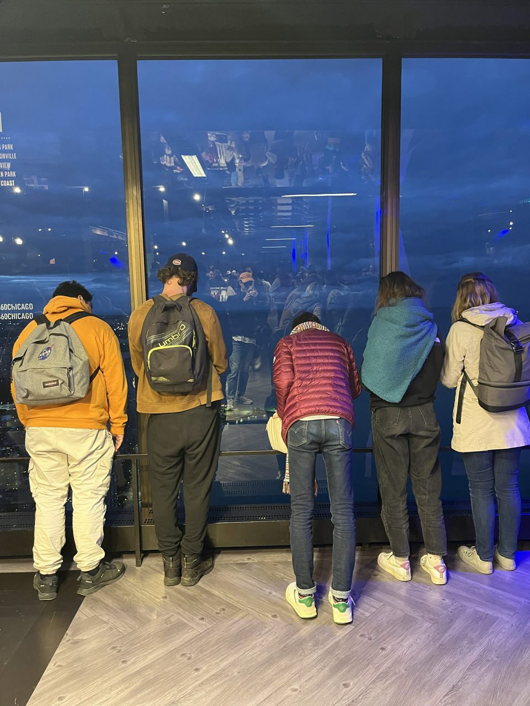

Jour 1 · Ville & culture
Arrivée en plein marathon, et le Bean
Encerclés de gratte-ciels et de marathoniens dès l'arrivée — c'est le jour du marathon de Chicago. On se gare et on file à Millennium Park voir le Cloud Gate, alias le Bean, forcément prétexte à une séance photo de groupe. On longe ensuite le Magnificent Mile, on passe dans un Apple Store immense et on se casse le cou à essayer de voir le sommet des buildings.
Et là, après quelques mètres à peine : une plage ! Chicago est bordée par le lac Michigan, un des Grands Lacs, aussi vaste qu'une mer. Le groupe se sépare ensuite : une partie monte en haut d'un gratte-ciel admirer la vue (vertige oblige, pas pour tout le monde), le reste se balade à Navy Pier pour observer la skyline de jour, puis de nuit. On termine par la spécialité locale, la deep dish pizza — un mélange improbable entre la quiche et la pizza, et c'est excellent.


